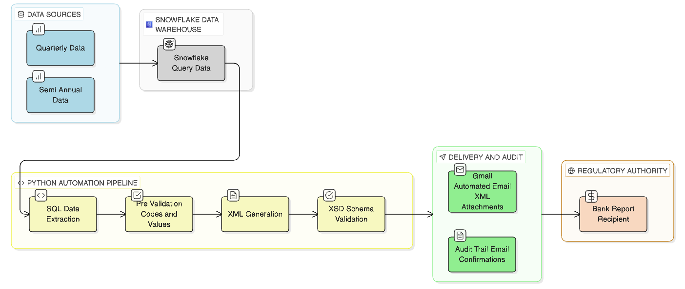
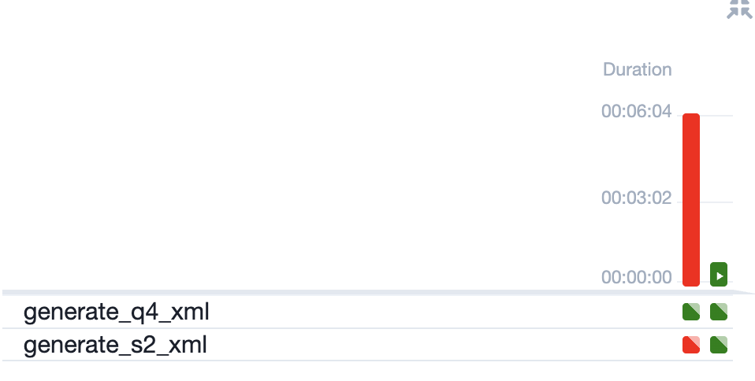

Automation of Regulatory Statistical Reporting
FINTECH

Project Background
Qonto is a leading European fintech company that provides innovative payment solutions and financial services to businesses across multiple countries. Qonto has emerged as a significant player, revolutionizing how businesses manage their financial operations through digital-first banking solutions. Understanding operational efficiency and regulatory compliance is crucial for any payment institution to maintain trust, scale sustainably, and deliver exceptional service to business customers. This project focuses on automating critical statistical reporting processes for payment operations, analyzing comprehensive data. The automation initiative helped Qonto's Risk & Compliance teams better understand operational workflows and regulatory requirements, enabling the company to continue its growth trajectory while maintaining regulatory excellence in the competitive European fintech market.
Problem Statement
Despite the organization's commitment to regulatory excellence, the manual reporting process created substantial operational, compliance and business risks:
- Payment data scattered across multiple platforms with no centralized extraction system
- Risk analysts manually building complex XML files prone to human error
- Many hours spent per year on repetitive data manipulation tasks
- Errors discovered only at submission time when corrections are time-consuming
- Inability to reproduce historical reports or prove data quality processes
- Knowledge concentrated in individual team members with no systematic documentation
Objectives
- Automate end-to-end quarterly and semi-annual report generation from data extraction to submission
- Transform many hours per year into under minutes annually for report generation
- Build automated SQL-to-XML pipeline extracting data from Snowflake data warehouse
- Create automated email and Google Drive distribution system with audit confirmations
Contribution
- Eliminated many hours of manual work per year freeing team for strategic risk analysis
- Full documentation enabled team transitions and reduces single person dependency
- Consistent professional reporting builds trust with banking regulators
Technical Stack
- Data Extraction: Python + Snowflake Connector (SSO authentication via externalbrowser)
- XML Generation: Python
xml.etree.ElementTreefor schema-compliant XML construction - Validation:
lxmllibrary with XSD schema validation - Storage: Google Drive API (automated upload with shared folder access)
- Distribution: Gmail API (automated email with XML attachments)
- Secrets Management: AWS SSM Parameter Store
- Orchestration: Airflow DAGs with scheduled execution

In production

Code:

(Please Note this is a dummy code with dummy data to respect Organization's Rules & Regulations)
Solution
The solution integrates cloud-based data processing pipelines with schema-driven XML generation and pre-submission compliance validation ensuring zero-error regulatory reporting while dramatically reducing manual intervention. Additionally predictive validation logic proactively identifies data quality issues including negative values, invalid country codes and missing mandatory fields before reports reach regulatory submission while dual-schema compliance engines handle both quarterly and semi-annual reporting structures automatically.